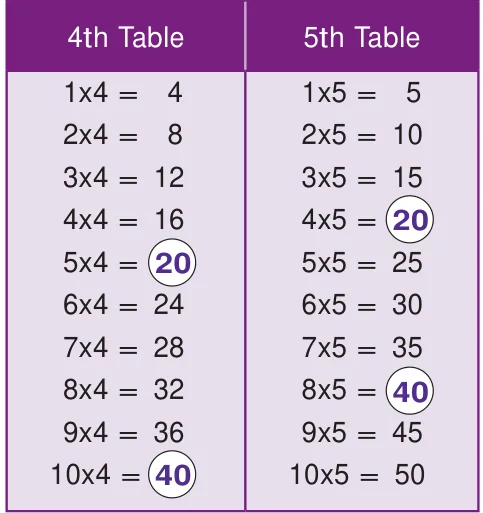
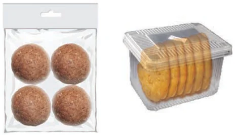

Let us now write the multiples of 5 and 7 Multiples of 5 are 5, 10, 15, 20, 25, 30, 35, 40, 45, 50, 55, 60, 65, 70,… Multiples of 7 are 7, 14, 21, 28, 35, 42, 49, 56, 63, 70,… Here, the common multiples of 5 and 7 are 35 and 70 and will go on without ending. As multiples of a number are infinite, we can think of the Least Common Multiple of numbers, shortly denoted as LCM.
1.6.1 Least Common Multiple (LCM)
Think about the situation:
Situation 1: Write the multiplication table of 4 and 5 (upto 10).

Observing the multiplication tables, can you find the multiples (product of numbers) that are the same in the 4th table and 5th table?. If yes, what are they? They are 20, 40,…etc. From the multiples of 4 and 5, we can easily find that 20 is the least common multiple of 4 and 5.
Situation 2:
Anu wants to buy Ragi Laddus and Thattais to serve at her sister's birthday party. Ragi Laddus come in packets of 4 and Thattais come in packets of 6. Anu has to buy these packets so that there are the same number of Ragi Laddus and Thattais to serve at the party. How will Anu tackle this situation?
This situation can be tackled by Anu using the concept of LCM. Here, multiples of 4 are 4, 8, 12, 16, 20, 24, ... and multiples of 6 are 6, 12, 18, 24, 30, 36, ... We find that the common multiples are 12, 24, ... of which 12 is the least common multiple. Hence, Anu should buy a minimum of 3 packets of Ragi Laddus and 2 packets of Thattais so that there are the same number of Ragi Laddus (12) and Thattais (12) to serve at the party.

Situation 3:
Consider the red and the blue coloured floor mats of length 4 units and 5 units as follows.
Five red coloured floor mats of 4 units each can be arranged as follows. Its total length is
\(5 \times 4 = 20\) units.
Four blue coloured floor mats of 5 units each can be arranged as follows. Its total length is also the same \(4 \times 5 = 20\) units.
Note that the 5 floor mats each of length 4 units are required to equal 4 floor mats each of length 5 units and that is, the length 20 units is the smallest common length that can be matched by both sizes. From the above, it shows that the least common multiple of 4 and 5
is 4x5=20.
The Least Common Multiple of any two non-zero whole numbers is the smallest or the lowest common multiple of both the numbers. The Least Common Multiple of the numbers x and y can be written as LCM (x,y).
We can find the least common multiple of two or more numbers by the following methods.
- Division Method 2. Prime Factorisation Method
Example 5: Find the LCM of 156 and 124.
Solution: By Division method 2 156,124 Step 1: Start with the smallest prime factor and go on 2 78, 62 dividing till all the numbers are divided as given below. 3 39, 31 13 13, 31 Step 2: \(LCM =\) product of all prime factors 31 1, 31
\(= 2 \times 2 \times 3 \times 13 \times 31 = 4836 1,1\)
Thus, the LCM of 156 and 124 is 4836.
By Prime Factorisation method
Step 1: We write the prime factors of 156 and 124 as given below (use of divisibility test rules will also help).
\(156 = 2 \times 78 = 2 \times 2 \times 39 = 2 \times 2 \times 3 \times 13 124 = 2 \times 62 = 2 \times 2 \times 31\)
Step 2: The product of common factors is 2 x 2 and also the product of the factors that are not common is 3 x 13 x 31.
Step 3: Now, \(LCM =\) product of common factors x product of factors that are not common
\(= (2 \times 2) x (3 \times 13 \times 31) = 4 \times 1209 = 4836\)
Thus, LCM of 156 and 124 is 4836.
(or)
\(156 = 2 \times 78 = 2 \times 2 \times 39 = 2 \times 2 \times 3 \times 13\); \(124 = 2 \times 62 = 2 \times 2 \times 31\)
The prime factor 2 appears a maximum of 2 times in the prime factorization of 156 and 124, the prime factor 3 appears only 1 time in the prime factorization of 156, the prime factor 13 appears only 1 time in the prime factorization of 156 and the prime factor 31 appears only 1 time in the prime factorization of 124. Hence, the required \(LCM = (2 \times 2) x 3 \times 13 \times 31 = 4836\).